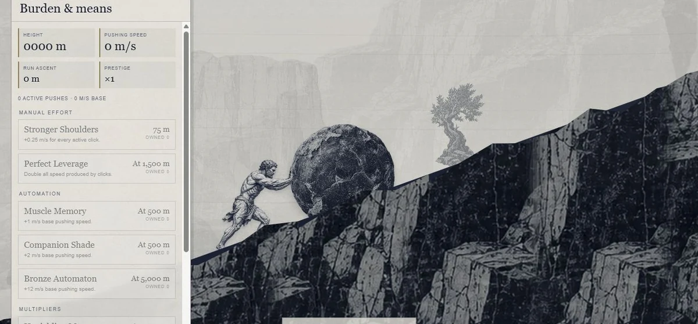
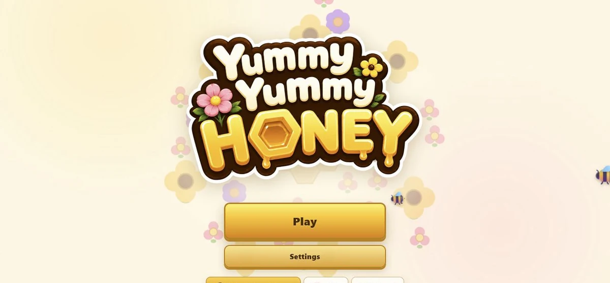
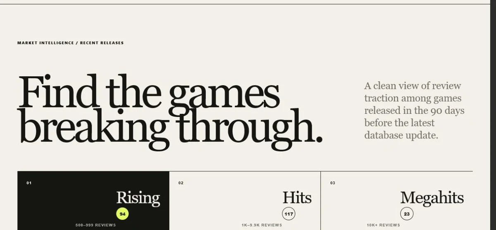

Small games · useful tools · odd ideas
Games and stuff
made for the web.
A growing shelf of things I make, test, and occasionally finish.



About
Gaming Is Dead Studio.
Independent games, strange experiments, and small tools. This is their home on the web.